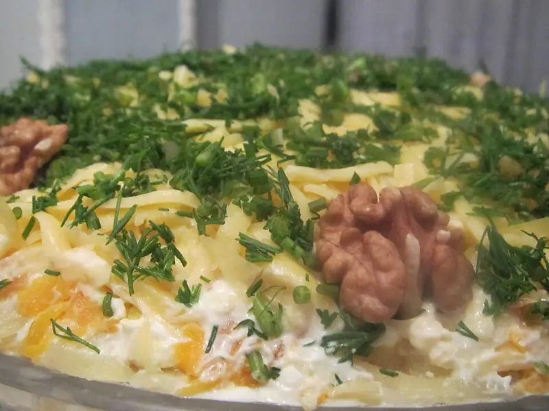

Фото: Moonsun1981, CC BY-SA 3.0

Салат Мимоза с сардинами
Слоёный салат из рыбных консервов, яиц, овощей и сыра, сверху тёртый желток
60 мин6 порц.455 ккал на порциюБ 21 · Ж 35 · У 15Русская кухня
Продукты на 6 порц.
- Сардины в масле1 банка
- Картофель3 шт
- Морковь2 шт
- Яйцо куриное4 шт
- Лук репчатый1 шт
- Сыр твёрдый100 г
- Майонез180 г
- Соль1 щеп.
- Укроп по желаниюпо вкусу
- Вода2000 мл
Как готовить
- Картофель и морковь в кожуре залейте водой и варите на среднем огне 20-25 минут, пока нож не войдёт легко. Яйца варите 10 минут после закипания.
- Остудите овощи и яйца 20 минут, очистите. Белки отделите от желтков.
- Сардины выложите в миску, удалите крупный хребет и разомните вилкой вместе с половиной масла из банки.
- Лук мелко порежьте и обдайте кипятком, чтобы ушла горечь. Картофель, морковь, белки и сыр натрите на крупной тёрке.
- Выкладывайте слоями: картофель, рыба с луком, морковь, сыр, белки. Каждый слой смажьте тонко майонезом, картофель и морковь слегка посолите.
- Сверху натрите желтки на мелкой тёрке, украсьте укропом.
- Дайте салату пропитаться в холодильнике 2 часа.
Совет. Не трамбуйте слои: Мимоза должна быть воздушной. Тереть продукты удобнее прямо над блюдом.